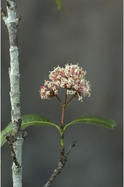
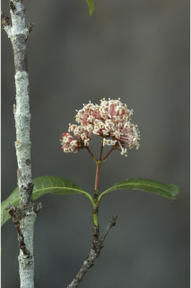

Large shrubs or small trees up to 5 m tall.
ದೊಡ್ಡ ಗಾತ್ರದ ಪೊದೆಗಳು ಅಥವಾ 5 ಮೀ. ಎತ್ತರದವರೆಗಿನ ಸಣ್ಣ ಗಾತ್ರದ ಮರಗಳು.
Large shrubs or small trees up to 5 m tall.
பெரிய குத்துச்செடி அல்லது சிறிய மரம் 5 மீ. உயரம் வரை வளரக்கூடியது.
Bark brown, rough.
ತೊಗಟೆ ಕಂದು ಬಣ್ಣದಲ್ಲಿದ್ದು,ಒರಟಾಗಿರುತ್ತದೆ.
Bark brown, rough.
மரத்தின் பட்டை ப்ரவுன், சொரசொரப்பானது.
Branchlets corky, with short internodes, glabrous.
ಕಿರುಕೊಂಬೆಗಳು ಬೆಂದು ರೂಪದಲ್ಲಿದ್ದು ,ಕಿರಿದಾದ ಅಂತರ ಗಿಣ್ಣನ್ನು ಹೊಂದಿದ್ದು ರೋಮರಹಿತವಾಗಿರುತ್ತವೆ.
Branchlets corky, with short internodes, glabrous.
சிறிய நுனிக்கிளைகள் கார்க் போன்றது, குட்டையான கணுவிடையுடையது, உரோமங்களற்றது.
Leaves simple, opposite, decussate; stipule broadly ovate and subulate, interpetiolar, caducous and leaving scar; petiole 0.5-1.3 cm long, planoconvex in cross section, glabrous; lamina 7.5-15 (-20) x 2.5- 7.5 cm, narrow elliptic to oblanceolate, apex acute to acuminate, base acute to cuneate, margin slightly revolute, coriaceous, glabrous; midrib raised above; secondary_nerves 12-16 pairs; tertiary_nerves reticulo-percurrent.
ಎಲೆಗಳು ಸರಳವಾಗಿದ್ದು ಕತ್ತರಿಯಾಕಾರದ ಅಭಿಮುಖ ಜೋಡನಾ ವ್ಯವಸ್ಥೆಯಲ್ಲಿರುತ್ತವೆ; ಕಾವಿನೆಲೆಗಳು ದಬ್ಬಳದಾಕಾರದ ಅಗ್ರವುಳ್ಳ ವಿಶಾಲವಾದ ಅಂಡ ಆಕಾರ ಹೊಂದಿದ್ದು ತೊಟ್ಟುಗಳ ನಡುವೆ ಇದ್ದು ಉದುರು ಮಾದರಿಯಲ್ಲಿದ್ದು ಉದುರಿದ ನಂತರ ಗುರುತುಗಳನ್ನು ಉಳಿಸುತ್ತವೆ;ತೊಟ್ಟು 0.5 ರಿಂದ 1.3 ಸೆಂ.ಮೀ.ವರೆಗಿನ ಉದ್ದವಿದ್ದು, ಅಡ್ಡ ಸೀಳಿದಾಗ ಸಪಾಟ ಪೀನ ಮಧ್ಯದ ಆಕಾರ ಹೊಂದಿರುತ್ತದೆ, ರೋಮರಹಿತವಾಗಿರುತ್ತದೆ;ಪತ್ರಗಳು 7.5-15(-20) X 2.5 –7.5 ಸೆಂ.ಮೀ. ಗಾತ್ರ ಹೊಂದಿದ್ದು ಸಂಕುಚಿತ ಅಂಡವೃತ್ತದಿಂದ ಬುಗುರಿ- ಭರ್ಜಿಯವರೆಗಿನ ಆಕಾರ ಹೊಂದಿದ್ದು,ಚೂಪಾದುದರಿಂದ ಕ್ರಮೇಣ ಚೂಪಾಗುವ ತುದಿ, ಚೂಪಾದುದದರಿಂದ ಬೆಣೆಯಾಕಾರದವರೆಗಿನ ಮಾದರಿಯ ಬುಡ,ಸ್ವಲ್ಪಮಟ್ಟಿಗೆ ಹಿಂಸುಳಿಗೊಂಡ ಅಂಚು,ತೊಗಲನ್ನೋಲುವ ಮೇಲ್ಮೈ ಹೊಂದಿದ್ದು ರೋಮರಹಿತವಾಗಿರುತ್ತವೆ; ಮಧ್ಯನಾಳ ಪತ್ರದ ಮೇಲ್ಭಾಗದಲ್ಲಿ ಉಬ್ಬಿರುತ್ತದೆ;ಎರಡನೇ ದರ್ಜೆಯ ನಾಳಗಳು 12 ರಿಂದ 16 ಜೋಡಿಗಳಿರುತ್ತವೆ;ಮೂರನೇ ದರ್ಜೆಯ ನಾಳಗಳು ಜಾಲಬಂಧ ನಾಳ ವಿನ್ಯಾಸದಲ್ಲಿದ್ದು ಎಲೆಯ ದಿಂಡಿಗೆ ಅಡ್ಡವಾಗಿ ಕೂಡುತ್ತವೆ.
Leaves simple, opposite, decussate; stipule broadly ovate and subulate, interpetiolar, caducous and leaving scar; petiole 0.5-1.3 cm long, planoconvex in cross section, glabrous; lamina 7.5-15 (-20) x 2.5- 7.5 cm, narrow elliptic to oblanceolate, apex acute to acuminate, base acute to cuneate, margin slightly revolute, coriaceous, glabrous; midrib raised above; secondary_nerves 12-16 pairs; tertiary_nerves reticulo-percurrent.
இலைகள் தனித்தவை, எதிரடுக்கமானவை, குறுக்குமறுக்கானவை; இலையடிச்செதில் அகன்ற முட்டை வடிவானது மற்றும் மெல்லிய நீண்ட கூர்மையான நுனியுடையது, இலையடிச்செதில் இருஇலைக்காம்பிற்கு நடுவே (இண்டர்பீட்டியோலார்) உடையது, எளிதில் உதிரக்கூடியது மற்றும் தழும்புகளை ஏற்படுத்துகின்றன; இலைக்காம்பு 0.5-1.3 செ.மீ. நீளமானது, குறுக்குவெட்டுத் தோற்றத்தில் பிளேனோகான்வக்ஸ், உரோமங்களற்றது; இலை அலகு 7.5-15 (-20) X 2.5-7.5 செ.மீ., குறுகிய நீள்வட்ட வடிவானது முதல் தலைகீழ் ஈட்டி வடிவானது, அலகின் நுனி கூரியது முதல் அதிக்கூரியது, அலகின் தளம் கூரியது முதல் ஆப்பு வடிவானது, அலகின் விளிம்பு சிறிது பின்புறம் வளைந்து (ரெவலுட்) காணப்படும், கோரியேசியஸ், உரோமங்களற்றது; மையநரம்பு மேற்புறத்தில் அலகின் பரப்பைவிட உயர்ந்து இருக்கும்; இரண்டாம் நிலை நரம்புகள் 12-16 ஜோடிகள்; மூன்றாம் நிலை நரம்புகள் வலைப்பின்னல்-பெர்க்கரண்ட் போன்றவை.
Inflorescence terminal corymbose cymes; flowers subsessile, rosy tinge.
ಪುಷ್ಪಮಂಜರಿಗಳು ತುದಿಯಲ್ಲಿನ ನೀಳಛತ್ರ ಮಧ್ಯಾರಂಭಿ ಮಾದರಿಯವು; ಹೂಗಳು ಉಪತೊಟ್ಟುಗಳನ್ನು ಹೊಂದಿದ್ದು ಗುಲಾಬಿ ಬಣ್ಣದ ಛಾಯೆ ಹೊಂದಿರುತ್ತವೆ.
Inflorescence terminal corymbose cymes; flowers subsessile, rosy tinge.
மஞ்சரி தண்டின் நுனியில் காணப்படும் கோரியம்ப் சைம் வகை மஞ்சரி; மலர்கள் காம்பற்றது அல்லது மிகச்சிறிய காம்புடையது, ரோஸ் நிறமானது.
Berry, globose, ca. 0.9 cm across; seed two.
ಬೆರ್ರಿಗಳು ಗೋಳದ ಆಕಾರದಲ್ಲಿದ್ದು,ಅಂದಾಜು 0.9 ಸೆಂ.ಮೀ. ಅಡ್ಡಗಲತೆ ಹೊಂದಿರುತ್ತವೆ; ಬೀಜಗಳ ಸಂಖ್ಯೆ 2.
Berry, globose, ca. 0.9 cm across; seed two.
முழுச்சதைகனி (பெர்ரி), கோள வடிவமானது, கிட்டதட்ட 0.9 செ.மீ. குறுக்களவுடையது; விதைகள் 2.


 
